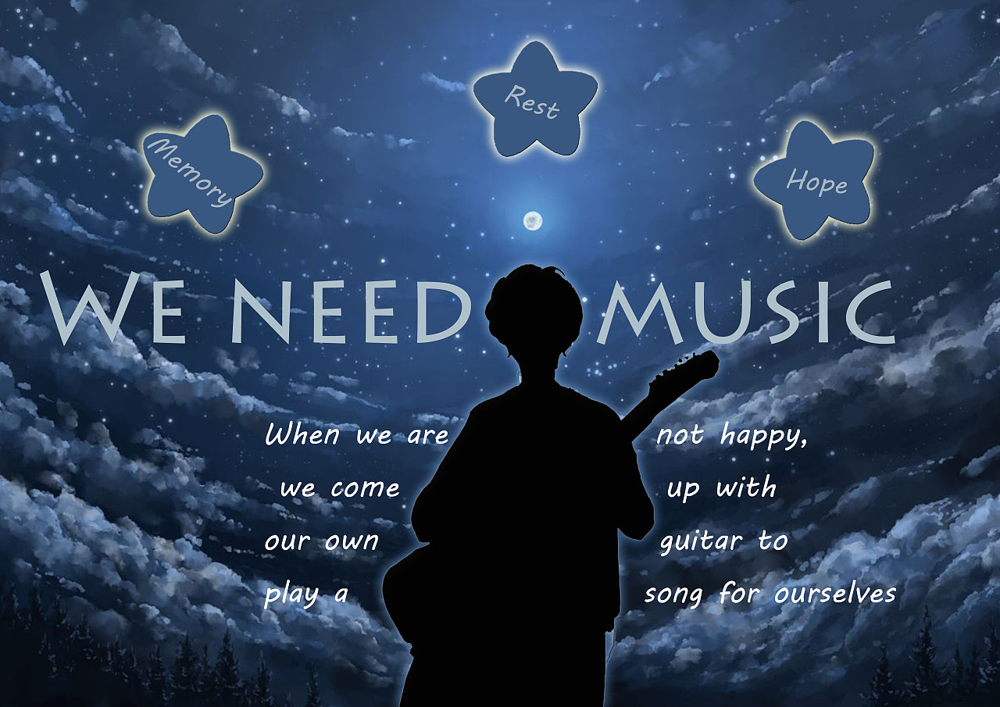

Course Detail
Course 1:Physics
Study the basic law of mechanical motion of objects and the law of space-time relativity
Topic2:Thermodynamics
Study the statistical law and macro performance of material thermal motion
Topic3:Electromagnetics
Study electromagnetic phenomena, the law of electromagnetic motion of matter and the law of electromagnetic radiation
Course 2:Chemical
Topic1:Inorganic chemistry
Inorganic chemistry is a science that studies the composition, properties, structure and reaction of inorganic substances
Topic2:Organic Chemistry
Organic chemistry is a science that studies the source, preparation, structure, properties, application and related theories of organic compounds, also known as the chemistry of carbon compounds.
Topic3:Polymer chemistry
Polymer chemistry is a new comprehensive subject that studies the synthesis, chemical reaction, physical chemistry, physics, processing and application of polymer compounds
Visit Magical chemical experiment .com!
Course 3:Biology
Topic1:Morphology
Morphology is a subject that studies the morphological structure of animals and plants in biology
Topic2:Physiology
Physiology is a subject that studies biological functions. The research method of physiology is mainly experiment
Topic3:Genetics
The discipline of studying the inheritance and variation of biological traits and clarifying their laws
Visit Interesting biology course.com!
Course 4:English

Topic1:Listening
Listen to English songs and texts, and learn the famous Dialogues in the classic English passages.
Topic2:Speaking
Read the English text aloud, understand its meaning and repeat it to other students.
Topic3:Writing
Use English to describe different compositions and write English articles.